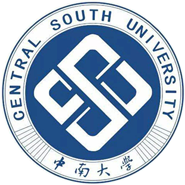

中南大学 iOS Club 目前大一大二大三活跃成员共有100人左右，场地及设备充足，管理有序，定期举办活动。 实验室成员立足信息技术，参加科技大赛，承担科研项目，孕育创新产品等形式激发队员的无限激情和潜能。 已开发 iOS 相关项目有: FootMark，一个基于地理位置的信息分享平台。 眼宝，一款针对青光眼疾病进行辅助诊断的 App 工具。 创客，一款帮助创客们分享 idea 的平台应用。 ARwiki，一款借助 AI 和 AR 对物体事实扫描并对物体信息进行三维展示的工具 App。 ChainCar，一款借助区块链进行汽车租赁的平台应用 GitHubContributions，一款对 GitHub contributions 进行统计并在锁屏状态显示的工具 App 等... 目前已有一人获得 WWDC 奖学金，移动应用创新赛两支队伍获得三等奖。 hackShanghai， hackZhongAn, HHHackathon Rank， IKODE@SHANGHAI Hackathon， SegmentFault Shanghai Hackathon， SegmentFault AngelHack Shenzhen Hackathon， Uber China Hackathon 等多个 hackathon 第一名或前3名
指导老师
鲁鸣鸣
邮箱
mingminglu@csu.edu.cn